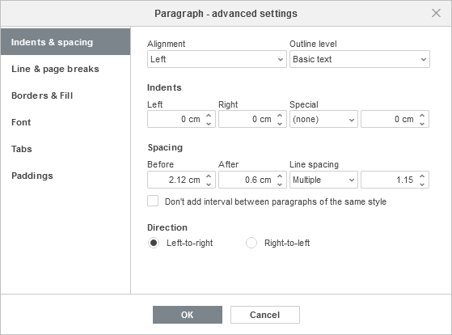

Podešavanje nivoa strukture pasusa
Nivo strukture (outline level) predstavlja nivo pasusa u strukturi dokumenta. U Document Editor-u dostupni su sledeći nivoi: Basic Text, Level 1 – Level 9. Nivo strukture može se odrediti na različite načine, na primer korišćenjem stilova naslova: kada pasusu dodelite stil naslova (Heading 1 – Heading 9), on automatski dobija odgovarajući nivo strukture. Ako nivo dodelite pasusu pomoću naprednih podešavanja pasusa, pasus zadržava nivo strukture samo dok njegov stil ostaje nepromenjen. Nivo strukture se takođe može promeniti u panelu Navigation sa leve strane, korišćenjem opcija iz kontekstnog menija.
Da biste promenili nivo strukture pasusa pomoću naprednih podešavanja pasusa,
- kliknite desnim tasterom miša na tekst i izaberite opciju Paragraph Advanced Settings iz kontekstnog menija ili koristite opciju Show advanced settings na desnoj bočnoj traci,
- u otvorenom prozoru Paragraph - Advanced Settings prebacite se na karticu Indents & Spacing,
- izaberite odgovarajući nivo strukture iz liste Outline level,
- kliknite na dugme OK da biste primenili izmene.
